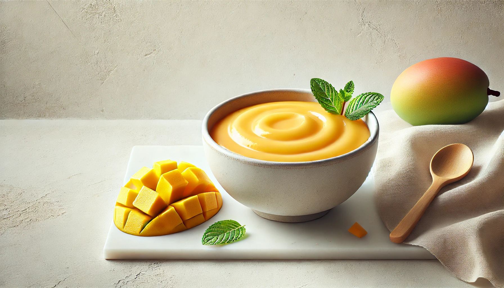
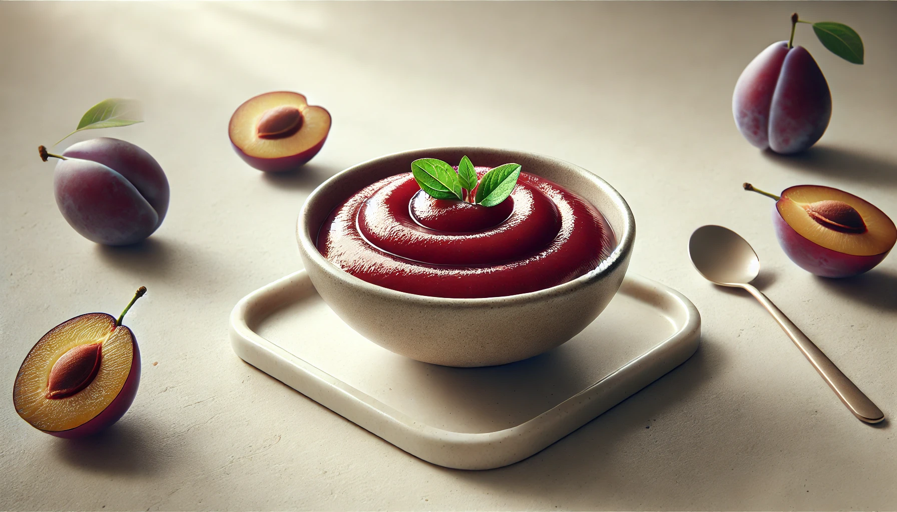
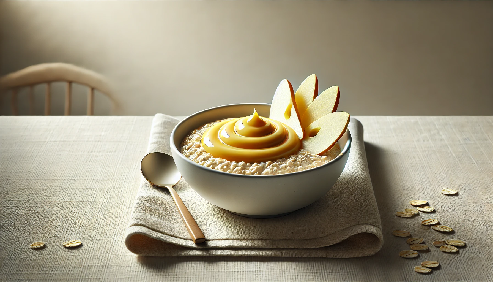
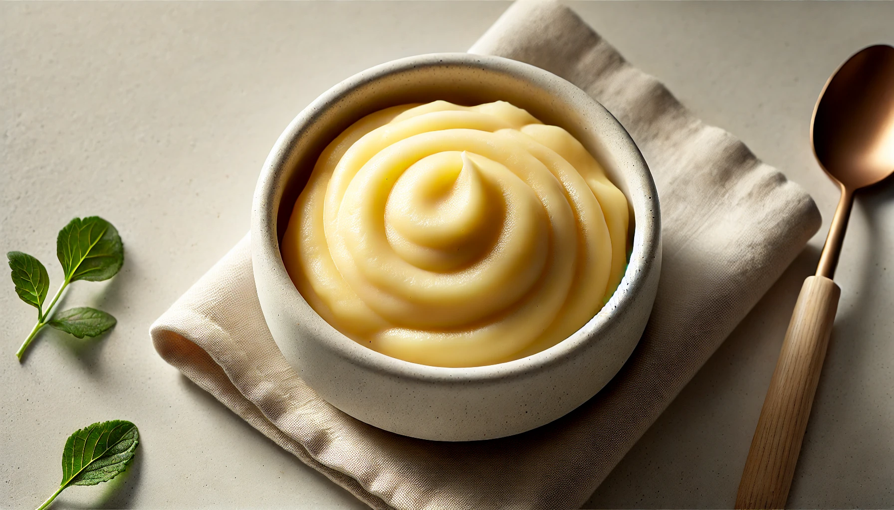
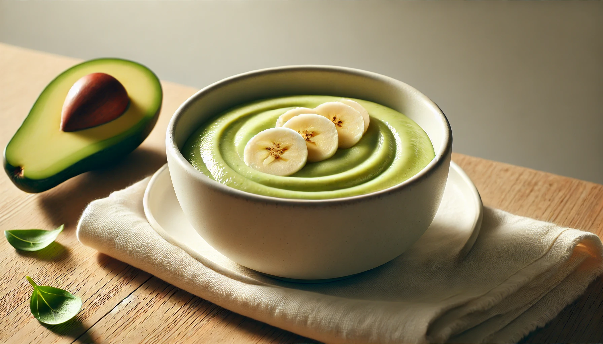
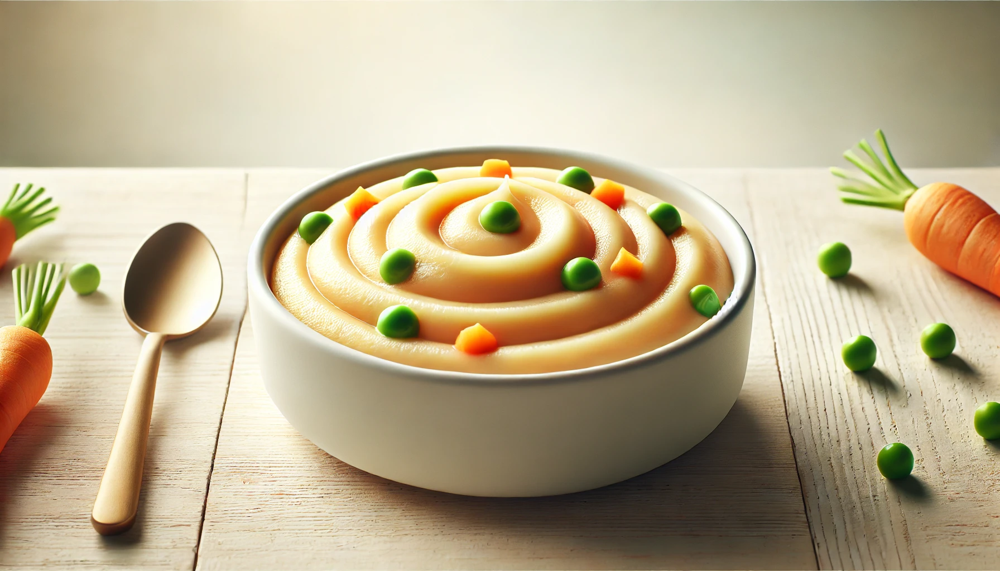

Breakfast Plan - 6 Months Old
Week 3
Introducing solids is a special milestone! This simple 7-day breakfast plan is designed for 6-month-old babies starting their first foods. Each recipe is made with wholesome, easy-to-digest ingredients. Perfect for beginner eaters!
Tips Before You Start:
⁕ Offer only 1 new food every 3 days to watch for allergies.
⁕ Make sure the texture is smooth and suitable for early eaters.
⁕ Always consult your pediatrician before introducing new foods.
How to Use This Plan:
Use fresh ingredients.
Offer 2–3 tablespoons per meal depending on baby’s appetite.
Store extra portions in sterilized containers.
Adjust consistency with breastmilk, formula, or boiled water.
This week adds more variety with gentle combinations and naturally sweet, baby-safe flavors. All recipes are soft, smooth, and developmentally appropriate for early weaning.

Breakfast Recipe
Mashed Mango
Description
A tropical favorite - soft, sweet, and full of vitamin C.
Ingredients
½ ripe mango (peeled)
Instructions
Mash thoroughly with a spoon or fork. Strain if needed for a smoother consistency.

Breakfast Recipe
Stewed Plum Purée
Description
Slightly tart and fibrous - great for digestion.
Ingredients
1 ripe plum (peeled and chopped)
Instructions
Steam or stew with a little water until soft. Blend into a purée. Cool before serving.

Breakfast Recipe
Broken Wheat Porridge (Dalia)
Description
A hearty fiber-rich porridge for strength and energy.
Ingredients
1 tbsp broken wheat (dalia)
¾ cup water
Instructions
Dry roast dalia lightly. Cook with water until soft and mushy. Blend if needed for smoother consistency.

Breakfast Recipe
Oats + Apple Combo
Description
Warm and comforting with the goodness of fruit and grain.
Ingredients
1 tbsp oats
¼ cup chopped apple
¾ cup water
Instructions
Cook oats and apple together until soft. Blend into a smooth mix. Cool before serving.

Breakfast Recipe
Mashed Potato with Milk
Description
Creamy and filling - introducing soft solids beyond purée.
Ingredients
1 small potato
1–2 tbsp breastmilk/formula
Instructions
Boil and mash the potato. Mix with milk until creamy and lump-free.

Breakfast Recipe
Avocado + Banana Mash
Description
A healthy-fat-and-carb combo babies love.
Ingredients
¼ avocado
½ banana
Instructions
Mash both together until smooth and creamy. Serve immediately to avoid browning.

Breakfast Recipe
Mixed Vegetable Purée
Description
A soft blend of carrot, potato, and peas. Nutrient-dense and flavorful.
Ingredients
1 tbsp chopped carrot
1 tbsp potato
1 tbsp peas
Instructions
Steam all vegetables until soft. Blend with a little water until smooth.
Week 4 ☛ Here